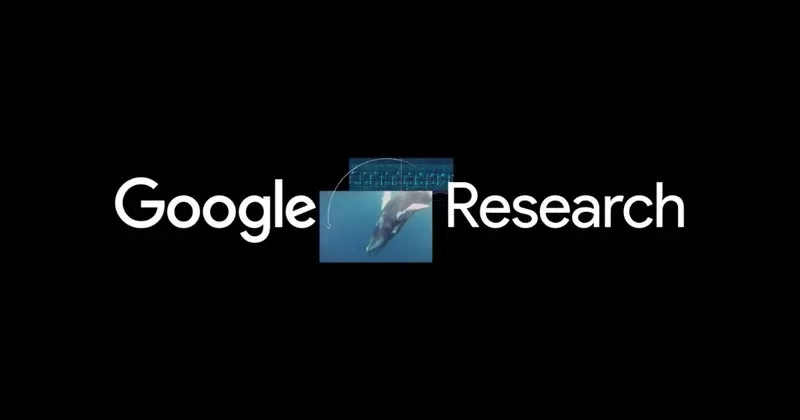

ИсследованияКод
Как миграция vLLM V0→V1 ломала обучение с подкреплением и как это починили
Четыре скрытых бага vLLM V1, которые ломали RL-обучение до того, как кто-то успевал тронуть алгоритм
Hugging Face Blog
6 маяРелизы, исследования, продукты, инвестиции и AI-рынок.
Архив · 741 новостных материалов · Автоматическое пополнение приостановлено
Четыре скрытых бага vLLM V1, которые ломали RL-обучение до того, как кто-то успевал тронуть алгоритм

a16z собрал $2,2 млрд для крипто — пока рынок падает, а конкуренты уходят в ИИ

NVIDIA и ServiceNow показали агента, который сам работает на вашем компьютере — с контролем и без утечек данных

Четыре паттерна работы с ИИ-агентами: что Microsoft советует перестроить в операционной модели компании

Кого из европейских ИИ-стартапов отслеживают партнёры Index Ventures, Northzone и a16z — 21 имя

OpenClaw обогнал React на GitHub. NVIDIA сделала из него корпоративный инструмент с защитой данных

ERA от Google решает задачи от прогноза эпидемий до нерешённых уравнений космологии — уже в реальном времени

Билл Гёрли и Джек Альтман вложили в стартап, который ищет госконтракты вместо вас

Air India, BMW, Mercedes-Benz и KPMG: как корпорации переходят от ИИ-экспериментов к реальным деньгам

Microsoft перестаёт платить OpenAI, лицензия с 2032 года — неисключительная. Партнёрство переписано, но не разорвано.

10 000 сотрудников NVIDIA уже используют GPT-5.5 в работе — что из этого получилось

Голосовой ассистент с камерой на $250 одноплатнике — без облака и без жёстко прописанной логики

Как NVIDIA, Adobe и WPP строят фабрику контента на ИИ-агентах — и почему это не маркетинговый хайп

Основательница AtoB и самый молодой партнёр в истории YC получила постоянную роль в акселераторе

Бывшие инженеры и исследователи OpenAI собрали $20 млн и объяснили, в какие ИИ-стартапы не стоит вкладывать

Семейные офисы идут в ИИ напрямую — без венчурных фондов и с местом в совете директоров

Nvidia вложилась в стартап, который делает открытые чипы — альтернативу x86 и ARM для ИИ-дата-центров

ARR Vercel утроился за два года. Теперь 30% приложений на платформе пишут ИИ-агенты

Anthropic стоит $800 млрд? Инвесторы готовы платить, но компания не торопится брать деньги

Sequoia удвоила ставку на ИИ: новый фонд в $7 млрд и портфель от OpenAI до роботов

Safetensors уходит от Hugging Face к сообществу — что изменится для разработчиков моделей

Интерактивный генеративный мир в реальном времени — теперь на домашнем GPU без дата-центра

Расширение для Chrome само заходит на сайты, заполняет формы и собирает данные — покажи один раз, дальше оно справится само

VAKRA тестирует ИИ-агентов на реальных API и документах — и большинство моделей проваливается

Как дообучить мультимодальную модель и обойти конкурентов вчетверо крупнее — разбор на реальном примере

Hugging Face сделал агента, который портирует модели в MLX и не раздражает ревьюеров — вот как это устроено

Как научить ИИ собирать корзину без галлюцинаций — 8 сред и 12 осей сложности

Как синтетические данные решили проблему многоязычного OCR там, где архитектура оказалась бессильна

Google научила ИИ рисовать схемы для статей и писать рецензии лучше существующих систем

Google выяснила, что ИИ-симуляторы пользователей легко разоблачить — и предложила способ это исправить